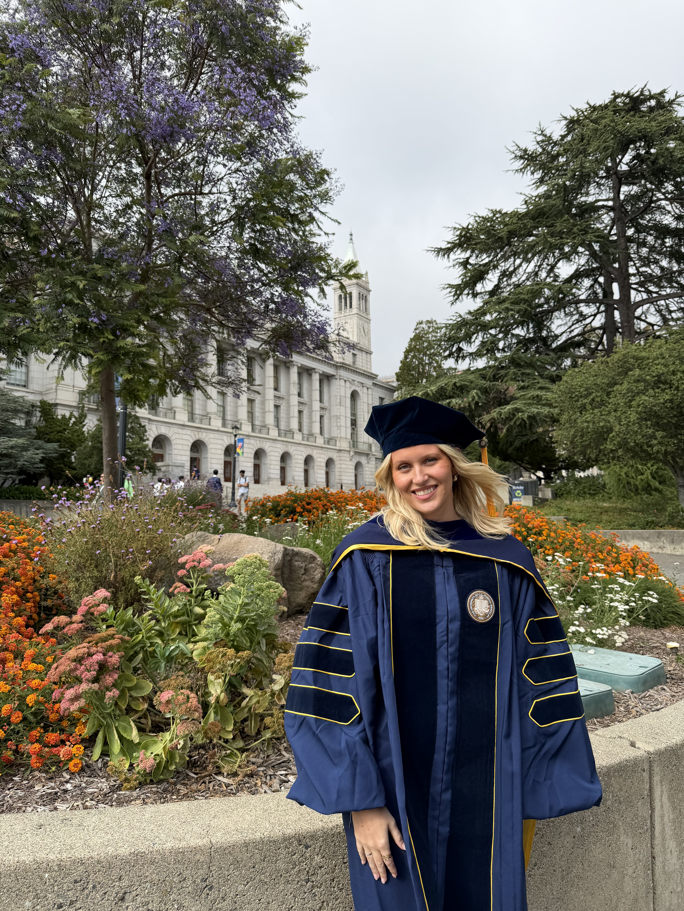

About me
I am a guest researcher at KTH Royal Institute of Technology from April to September 2026, working with Sandra Di Rocco. I received my Ph.D. in Mathematics from the University of California, Berkeley, under the supervision of Bernd Sturmfels. In my dissertation Nonlinear Algebra in Quantum Chemistry I develop algebraic geoemetry for quantum chemistry, focusing on the coupled cluster method. I received my B.S. in Mathematics with honors from the University of Iceland in Spring 2022. During my final year of my Ph.D., I was a visiting student at the Max Planck Institute for Mathematics in the Sciences in Leipzig, Germany.
In Fall 2026, I will begin a postdoctoral position as a Junior Research Fellow at Merton College, University of Oxford.
My mathematical interests lie in computational algebraic geometry, commutative algebra, and combinatorics. In particular, I enjoy studying problems arising in quantum chemistry and physics using tools from nonlinear algebra.
You can reach me by my email at svala@math.berkeley.edu.
Here is my CV [current as of October 21st 2025].

Research
Preprints
-
Eigenvector Varieties,
(with Sandra Di Rocco and Bernd Sturmfels),
24pp,
2026. -
Algebraic Geometry for Spin-Adapted Coupled Cluster Theory,
(with Fabian Faulstich),
27pp,
2026. -
Plane Partitions and Spin Adapted Quantum States,
(with Abigail Price and Ada Stelzer),
10pp,
2026.
Publications
-
Gram Matrices for Isotropic Vectors
(with Yassine El Maazouz and Bernd Sturmfels),
23pp,
to appear inCommunications in Mathematical Physics.
-
Algebraic Varieties in Second Quantization
25pp,
SIAM Journal on Applied Algebra and Geometry
10
(2026)
490-517.
-
Kinematic Varieties for Massless Particles
(with Smita Rajan and Bernd Sturmfels),
19pp,
Le Matematiche
80
(2025)
453-471.
-
Exploring Ground and Excited States via Single Reference Coupled-Cluster Theory and Algebraic Geometry
(with Fabian Faulstich),
39pp,
Journal of Chemical Theory and Computation
20
(2024)
8517-8528.
-
Coupled Cluster Degree of the Grassmannian
(with Viktoriia Borovik and Bernd Sturmfels),
13pp,
Journal of Symbolic Computation
128
(2025)
102396.
-
Algebraic Varieties in Quantum Chemistry
(with Fabian Faulstich and Bernd Sturmfels),
25pp,
Foundations of Computational Mathematics
24
(2024)
1-32.
-
Four-Dimensional Lie Algebras Revisited
(with Laurent Manivel and Bernd Sturmfels),
Journal of Lie Theory
33
(2023)
703-712.
Activities
2026
-
July 13th - 17th
:Attending and giving a talk at the TENORS Workshop 2 at the University of Trento.
(Trento, Italy).
-
June 22nd - 26th
:Attending the Metric Algebraic Geometry conference at Mittag-Leffler Institute.
(Stockholm, Sweden).
-
April - October
:Guest researcher at KTH Royal Institute of Technology, working with Sandra Di Rocco.
(Stockholm, Sweden).
-
April 16th
:Coorganizing the AI in Math event at MPI Leipzig.
(Leipzig, Germany).
-
April 14th - 15th
:Attending the Metric Algebraic Geometry: Starting Local workshop at MPI Leipzig.
(Leipzig, Germany).
-
January - April
:Writing my PhD thesis titled ''Nonlinear Algebra in Quantum Chemistry''.
(Leipzig, Germany).
2025
-
November 11th
:Giving a colloquium at the Institute for Numerical and Applied Mathematics at the Georg-August-University.
(Göttingen, Germany).
-
November 3rd - 5th
:Attending the Cosmology Meets Non-Linear Algebra Workshop at the University of Amsterdam.
(Amsterdam, Netherlands).
-
September 22nd - 28th
:Attending and giving a talk at the TENORS Workshop 1 at the University of Konstanz.
(Konstanz, Germany).
-
September 8th - 11th
:Attending the 10th IMIC on Distance and Critical Points at the Sapientia Hungarian University of Transylvania.
(Tirgu Mures, Romania).
-
July 7th - 11th
:Attending SIAM AG25 and giving a talk at the Algebra and Geometry of the Quantum Many-body Problem Minisymposia
(Madison, Wisconsin).
-
June 30th - July 11th
:Attending the Summer School for Mathematical Introduction to High-Accuracy Electronic Structure Theory at the IMSI
(Chicago, Illinois).
-
June 6th
:Giving a talk at the Seminar on Nonlinear Algebra at MPI Leipzig
(Leipzig, Germany).
-
June 1st - 19th
:Visit to Max Planck Institute for Mathematics in the Sciences
(Leipzig, Germany).
-
April 30th
:Giving a talk at the Information, Geometry and Physics seminar in CalTech
(Los Angeles, California)
-
April 9th
:Giving a talk at the Algebra, Geometry, and Combinatorics seminar at SFSU
(San Francisco, California)
-
March 31st - April 4th
:Visting the Rensselaer Polytechnic Institute and giving a talk at the Math Fronier Seminar
(Troy, New York)
-
February 25th
:Giving a talk at the Algebra and Discrete Mathematics seminar at UC Davis
(Davis, California)
-
February 12th
:Speaking in the the Quantum Lunch at the Centre for the Mathematics of Quantum Theory
(Copenhagen, Denmark)
-
February 7th
:Attending and giving a talk at the Nonlinear Algebra meets Quantum Chemistry workshop at MPI Leipzig
(Leipzig, Germany).
-
February 3rd-6th
:Attending the Numerical (Nonlinear) Algebra in the Real World workshop in CSBD Dresden
(Dresden, Germany).
-
January 21st
:Speaking at a subgroup meeting in the theoretical chemistry department at Stanford University
(Stanford, California).
-
January 8th-11th
:Attending JMM and giving a talk at the AMS Special Session on Applications of Algebraic Geometry
(Seattle, Washington).
2024
-
December 12th
:Giving a talk at the UC Berkeley Nonlinear algebra seminar
(Berkeley, California).
-
August - December
:Organizing a reading seminar on the book Tensors: Geometry and Applications by J.M. Landsberg
Schedule(Berkeley, California).
-
June 10th - June 13th
:Visiting and giving a talk at the University of Osnabrück
(Osnabrück, Germany).
-
June 3rd - June 7th
:Giving a talk at the Optimization Techniques in Quantum Chemistry summer school in RWTH
(Aachen, Germany).
-
May - July
:Visit to Max Planck Institute for Mathematics in the Sciences
(Leipzig, Germany).
-
May 4th
:Talking in Research in Combinatorics by Early Career Mathematicians session at the AMS sectional meeting in SFSU
(San Francisco, California).
-
February 25th - March 1st
:Presenting a poster at the 63rd Sanibel Symposium
(St. Augustine, Florida).
2023
-
September - November
:Studying for my Qualifying Exams on November 29th Syllabus
(Berkeley, California).
-
July 4th - July 6th
:Visiting and giving a talk at the University of Osnabrück
(Osnabrück, Germany).
-
June - July
:Visit to Max Planck Institute for Mathematics in the Sciences
(Leipzig, Germany).
-
May 28th - June 2nd
:Attending Oberwolfach Seminar: Metric Algebraic Geometry
(Oberwolfach, Germany).
2022
-
June - August
:Visit to Max Planck Institute for Mathematics in the Sciences
(Leipzig, Germany).
Teaching
-
Fall 2024
:MATH1A
-Calculus.
Teaching assistant,
Instructor: Alexander Paulin.
-
Spring 2024
:MATH113
-Introduction to Abstract Algebra.
Teaching assistant,
Various instructors.
-
Fall 2023
:MATH54
-Linear Algebra & Differential Equations.
Teaching assistant,
Instructor: Zvezdelina Stankova.
-
Spring 2023
:MATH54
-Linear Algebra & Differential Equations.
Teaching assistant,
Instructor: Norman Sheu.
-
Fall 2021
:Honors Linear Algebra.
Teaching assistant,
Instructor: Rögnvaldur Möller.
-
Spring 2021
:Probability and Statistics.
Teaching assistant,
Instructor: Hermann Þórisson.
-
Fall 2020
:Mathematical Analysis I.
Teaching assistant,
Instructor: Benedikt Steinar Magnússon.